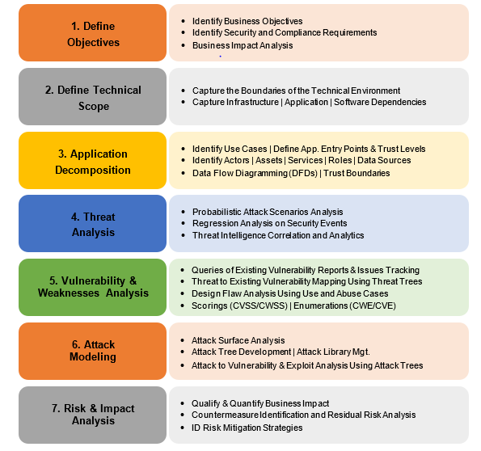
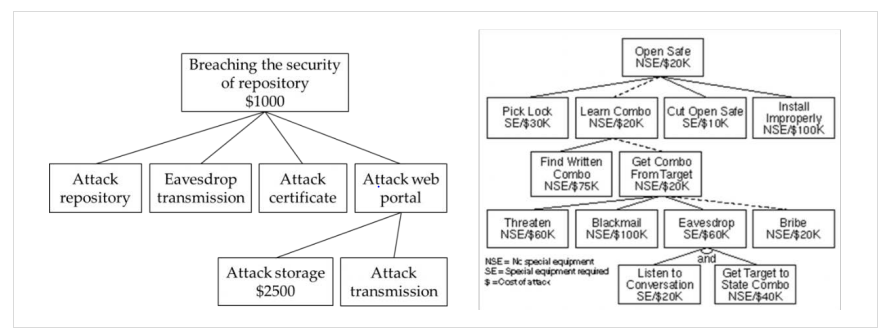
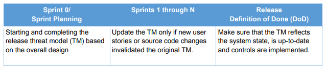

In essence, the process of threat modeling entails raising and
answering questions about protecting assets. Threat modeling’s application to
software design has been gaining widespread adoption in recent years. During threat
modeling exercises, security practitioners systematically identify and rate the
threats that are most likely to affect business critical systems. Threats are
prioritized by impact and component criticality and addressed accordingly.
A can be created for a new or
preexisting software or system. Threat modeling activities can become complex and
resource intensive, so organizations should plan accordingly. Sometimes
organizations will opt to scope threat modeling efforts to certain components based
on business mission or constraints.
Objectives
Identify the threat modeling process, tools, and methodologies.
Indicate the process of attack surface evaluation and management.
Discuss threat intelligence and sources for cyberthreat information.
Overview
Cyberattacks have spared no industry or sector. Organizations of
all sizes, and in virtually all industries—financial, healthcare, manufacturing,
energy, retail, etc.—recognize cyberthreats as a key area of concern. Malware and
insider threats remain among the biggest threat sources.
Threat modeling is one of the most important security-relevant
activities. The threat modeling process identifies threats that can do harm to the
system; provides an estimate of potential harm; and identifies the need for security
features, careful code review, and security testing. To do this, the CSSLP needs to
understand common and third-party threats as well as to perform an attack surface
analysis.
Common Threats
In this section we will discuss threats in the context of
software security risks, including spoofing or tampering by malicious actors such as
hackers and criminals, misuse by nonmalicious actors such as insiders, and various
types of malicious software such as ransomware. In addition, there are many other
factors that could also have an adverse impact on the security objectives of
confidentiality, integrity, and availability. Just a few examples are:
Software reliability issues, such as a mobile messaging application that
delivers a message to the wrong recipient
Natural disasters, such as earthquakes, that adversely impact availability
Circumstantial spikes on load and volume, such as the increase in the use of
virtual communication services and infrastructure due to a pandemic that
requires social distancing
While it is impossible to anticipate all possible threats,
organizations need to understand the threats that are most relevant to them and
recognize that threats may be at any of various levels: the organization level,
mission/business process level, or information system level.
MITRE ATT&CK Framework
In a previous domain, MITRE’s Adversarial Tactics, Techniques,
and Common Knowledge (ATT&CK) was introduced. It was pointed out that ATT&CK
was created out of a need to document adversary behaviors.
ATT&CK is largely a knowledge base of adversarial
techniques—a breakdown and classification of offensively oriented actions that can
be used against platforms such as Windows. Unlike prior work in this area, the focus
isn’t on the tools and malware that adversaries use but on how they interact with
systems during an operation.
ATT&CK organizes these techniques into a set of tactics to
provide context for the technique. Each technique includes information that’s
relevant to both a red team or penetration tester to understand how a technique
works, and to a defender to understand the context surrounding events or artifacts
generated by a technique in use.16
The ATT&CK Framework can help organizations mature their
security programs and enhance their strategies to prevent, detect, and respond to
threats. Various use cases for ATT&CK include:
Adversary Emulation
Red Teaming
Behavioral Analytics Development
Defensive Gap Assessment
SOC Maturity Assessment
Cyber Threat Intelligence Enrichment
Example: Using ATT&CK for
Adversary Emulation
In Red Teaming, adversary emulators construct a scenario to test
certain aspects of an adversary’s tactics, techniques, and procedures (TTPs). The
red team then follows the scenario while operating on a target network to test how
defenses might fare against the emulated adversary.
Frameworks such as CALDERA, which uses the ATT&CK model and
consists of a core system and plugins that provide additional functionality, may be
used to build and launch adversary profiles to identify susceptible areas, test
defenses, and train blue teams.
Advanced Persistent Threat
A definition for Advanced Persistent Threat (APT) is presented
by NIST as “an adversary with sophisticated levels of expertise and significant
resources, allowing it through the use of multiple different attack vectors (e.g.,
cyber, physical, and deception), to generate opportunities to achieve its
objectives.” These are typically “to establish and extend its presence within the
information technology infrastructure of organizations [to] continually exfiltrat[e]
information and/or to undermine or impede critical aspects of a mission, program, or
organization, or place itself in a position to do so in the future....” Moreover,
NIST adds, “[T]he advanced persistent threat pursues its objectives repeatedly over
an extended period...adapting to a defender’s efforts to resist it, and with
determination to maintain the level of interaction needed to execute its
objectives.”17
Adversaries include nation states, activist groups, and criminal
groups. Published industry reports have identified technology, energy, financial,
and healthcare among sectors frequently targeted by adversaries. Tactics deployed by
the threat actors constantly change and evolve.
The term insider threat should not be strictly interpreted as
employees who intend to directly harm the organization through theft, sabotage, or
other means. Statistics and reports from industry indicate that ignorance and
negligence (and not necessarily malicious intentions) are also a major cause of
security breaches and incidents. With this point established, a reference to insider
threat could include employees or former employees, contractors or business
associates, and those with inside information on organizations’ processes,
practices, or data, among other things. Simply put, these insiders are generally
more aware of potential abuse vectors.
Common Malware
Malicious software (malware) remains a significant threat, and
malware incidents are common. NIST SP 800-83 provides guidance for the prevention
and handling of malware incidents.
Malware comes in many forms (e.g., viruses, worms, Trojans,
rootkits) and the symptoms of a malware infection vary. Common symptoms include
increased CPU usage, slow operation of the computer, and modified or deleted files.
Combating the Malware Threat
Scanning files on end points for patterns that are indicative of
known malware (e.g., unique code sequences for a particular virus) is common among
endpoint protection technologies, but more is needed. Also included in best
practices for addressing the malware problem are creating awareness for the user
base and keeping up with security patches.
As malware attacks gain in sophistication, so do the
technologies and methods for combating the threat. Many scanners have been
introduced over the years, and URL/domain blocking services are being used to combat
malware.
Websites, online services, and APIs have also been created to
aggregate many scan engines (e.g., VirusTotal). These utilities increase the chances
of detecting malware that may have been missed by one engine working alone.
Common Malware Types
Viruses. As conventionally defined, a virus has the ability to
replicate itself (infect other files) and target binary executable files.
Viruses may spread via the network or through infected removable media, among
other possibilities. When the infected host file is executed, the virus is
executed as well. An event (e.g., user interaction) will trigger the delivery of
the payload. Some viruses are metamorphic—that is, they can evolve into variants
by modifying themselves. Viruses come in many varieties. Depending on the
particular virus, they may infect files, boot records, or other parts of the
computer.
Worms. Also considered self-replicating, worms spread throughout a
network. Unlike viruses, they do not need the support of a file and event to
trigger the delivery of the payload.
Trojan. This is a program designed for malicious activities that runs
under the disguise of a legitimate/benign program. Trojans do not reproduce (in
contrast to viruses and worms). The creation of backdoors is common with
Trojans.
Ransomware. This is a type of malware that typically attempts to block
access to files (e.g., through cryptographic means) for the purpose of extortion
and ransom payment.
Spyware and adware. Designed to gather sensitive information or support
advertising as part of their activities respectively.
Bots. A shortened form of the word robot, bots are processes that
normally automate tasks and services. Bots may not be created for malicious
activities, but malicious bots can become part of a remote command and control
center for launching flooding (DoS) attacks. Botnets are an entire network of
compromised systems.
Third-Party Software Threats
The risk associated with third-party software components and
libraries will be discussed in later chapters. For now, recognize that third-party
software always carries a security risk. When software is developed outside the
organization’s control and without sufficient visibility into the development life
cycle processes, there are risks that need to be addressed. This is true of
purchased off-the-shelf software as well as custom software that has been developed
through outsourcing/offshoring arrangements.
To reduce the threat of third-party software, organizations
should:
Remove all software that is not used/needed. This includes removing or disabling
all software features that are unlikely to be used, ultimately reducing the
attack surface. There are tools that can help with this task, but most
organizations do not follow this path.
Work with vendors that have proper and defined patch management release cycles
and inform customers of discovered vulnerabilities and availability of updates
to address them. Further, a third-party patch management solution should be
implemented. This solution should provide assurance that third-party patches are
frequently identified, tested, and applied subject to patch management cycles.
Develop a clear understanding of all libraries and components that make up the
software developed by third-party vendors. This may partially be achieved by
reviewing the licensing arrangement of the vendor. For assurance, a
comprehensive list of libraries and components must be obtained from the vendor.
Maintain an inventory and list of authorized software in the organization and
restrict the usage of unauthorized third-party software on corporate IT assets.
Reduce the attack surface by blocking ports and restricting connections and
communications on the network and between hosts. This can be done by using web
application firewall (WAF) functionality where appropriate in layered defenses.
Threat Modeling Concepts and
Terminology
According to the Homeland Security Systems Engineering and
Development Institute (HSSEDI)™ Operated by The MITRE Corporation, “a model is an
abstract representation of some domain of human experience, used (1) to structure
knowledge, (2) to provide a common language for discussing that knowledge, and (3)
to perform analyses in that domain.”
HSSEDI continues, “A variety of terms are used in threat
modeling, including threat, threat actor, threat event, threat vector, threat
scenario, campaign, attacker, attack, attack vector, attack activity, malicious
cyber activity, and intrusion. Different threat modeling approaches define these
terms differently, due to assumptions about the contexts and purposes for which they
will be used. Terminology related to threat is embedded in a larger setting of
terminology about risk.”18
Threat modeling works to identify, communicate, and understand
threats and mitigations within the context of protecting something of value.
Threat modeling can be applied to a wide range of entities,
including software, applications, systems, networks, distributed systems, the
Internet of Things, business processes, and more. There are few technical products
that cannot be threat modeled. Threat modeling can happen at any stage of
development, but it is preferably done early so that the findings can inform the
design.
Software Threat Modeling Tools,
Methodologies and Process
Most software systems face various types of threats, and the
number of threats continues to grow. This being the case, threat modeling is a
critical step in securing software against attacks. The process of threat modeling
involves first identifying potential threats to the application, then ranking these
threats by risk, and finally selecting appropriate countermeasures or mitigations
for the threats.
Here are some guidelines for software threat modeling.
Select the threat modeling participants. There are no preset rules as
to who may or may not participate in a threat modeling exercise. Participating
members may be security engineers, architects, developers, or other software
stakeholders—even customers may be involved—as deemed appropriate by the
organization and the project.
Threat model early in the life cycle. Although threat modeling can
theoretically be performed during any stage of development, for its findings to
inform and influence the design of the software, it would be best to conduct it
as early as possible. As such, threat modeling may be considered a design phase
security activity, ideally taking place as soon as the architecture is
established. Keep in mind that identifying and remediating potential issues at
later stages can be much more costly, if doing so is even possible at all.
Determine what to threat model. Organizations may threat model new
applications or existing applications. They may choose to threat model an entire
application or just specific components/modules of the application (e.g., the
authentication module). It would be wise to start small, gain experience and do
it successfully, and then increase the scope of the threat model.
Document the threat model. As part of creating a threat model,
documentation is also produced. This documentation can be useful for those who
perform code reviews, for those who create security test cases, and others.
Simply put, the work that is accomplished and the documents produced as part of
a threat modeling exercise will benefit activities in other phases of the data
life cycle as well.
Update the threat model. The threat model should be reviewed and
updated as required to reflect the changes in application design and
functionality. As potential threats are discovered and the implementation
details of the application become known, the threat model should also be
updated.
Threat Modeling Tools
The industry has a variety of threat modeling tools available to
the software community. The following are three of the most widely used ones.
Microsoft threat modeling tool. Introduced in the late 2000s, the
Microsoft Threat Modeling Tool makes threat modeling easier for all developers
through a standard notation for visualizing system components, data flows, and
security boundaries. It also helps threat modelers identify classes of threats
they should consider based on the structure of their software design. We
designed the tool with nonsecurity experts in mind, making threat modeling
easier for all developers by providing clear guidance on creating and analyzing
threat models.19
OWASP Threat Dragon. Introduced in the late 2010s, it is a tool used to
create threat model diagrams and to record possible threats and decide on their
mitigations.20
A screen from the OWASP Threat Dragon is shown in this figure.
Threatspec. Threatspec is open source. Its main value can be attributed
to helping to close the gap between development and security by bringing the
threat modelling process further into the development process. This is achieved
by having developers and security engineers write threat specifications
alongside code, then dynamically generating reports and data-flow diagrams from
the code. This allows engineers to capture the security context of the code they
write, as they write it.21
Threat modeling methodologies are useful in several ways. They
help create abstractions of the system being threat modeled, identify potential
attackers and their goals and objectives, and promote an understanding of potential
threats that may rise. Threat modeling methods and techniques vary in popularity and
comprehensiveness, and each has its strengths and weaknesses. Different
methodologies are better suited for certain purposes or types of systems. Sometimes,
multiple methodologies can be used at once. A few methodologies follow.
STRIDE
Considered a mature methodology, (spoofing, tampering, repudiation,
information disclosure, denial of service, and elevation of privileges) was
introduced in late 1990s and adopted by Microsoft in early 2000s. It applies a
general set of known threats based on its name, which is a mnemonic. The STRIDE
threat modeling framework ensures secure application design. These threats and the
properties they violate are listed in this table.
Threat
Property Violated
Threat Definition
S
Spoofing identify
Authentication
Pretending to be something or someone other than yourself
T
Tampering with data
Integrity
Modifying something on disk, network, memory, or elsewhere
R
Repudiation
Non-repudiation
Claiming that you didn't do something or were not responsible; can
be honest or false
I
Information Disclosure
Confidentiality
Providing information to someone not authorized to access it
D
Denial of service
Availability
Exhausting resources needed to provide service
E
Elevation of privilege
Authorization
Allowing someone to do something they are not authorized to do
Table 3: STRIDE
DREAD
An older methodology that is no longer commonly used,
was developed by Microsoft and used
in conjunction with STRIDE to suggest ranking threats on a scale of 1 to 10 based on
predefined assessment criteria. This required estimating the negative impact that
could result from an attack, attack frequency, effort to exploit, and expertise
required to successfully execute the attack, which would produce a likelihood of
exploitation. The DREAD criteria, score, and comments are listed here.
DREAD Criterion
Score
Comments
Damage
8
Work disruption but no data loss
Reproducibility
10
Failure every time...
Exploitability
7
Not very easily conducted as it requires...
Affected Users
10
Everyone will be affected
Discoverability
10
Every threat will be...
Table 4: Sample Assessment Per DREAD
Process for Attack Simulation and
Threat Analysis
The Process for Attack Simulation and Threat Analysis (PASTA) is
a risk-centric threat modeling framework developed in 2012 by Tony UcedaVélez. It
contains seven steps, each with multiple activities aligned to business objectives
and technical requirements. PASTA can also assist security practitioners with
business analysis for identifying compliance gaps. The stages and activities of
PASTA are listed in this table.

Figure 13: PASTA Stages and Activities22
22 Timothy A. Chick, Paige O’Riordan, Thomas Patrick
Scanlon, Ph.D., Nataliya Shevchenko, Carol Woody, Ph.D.; Carnagie Mellon University
Software Engineering Institute; Threat Modeling: A Summary of Available Methods;
July 2018; https://resources.sei.cmu.edu/asset_files/WhitePaper/2018_019_001_524597.pdf;
retrieved June 2023.
Attack Trees
Attack trees provide tree diagrams that depict potential attacks
on a system. Attack trees should be simple and easily understood, but often
construction requires a thorough understanding of system details and the security
objectives, which may not be completely understood during diagramming. If attack
trees can be constructed, the tree root is the goal for the attack, and the leaves
are ways to achieve that goal. Each goal is represented as a separate tree. Thus,
the system threat analysis produces a set of attack trees. When attack trees are
built, they can be used to make security decisions, see if the systems are
vulnerable to an attack, and evaluate a specific type of attack.23

Figure 14: Attack Tree Example24
23 Ibid.
24 Ibid.
Other Methodologies
Other methodologies include:
Trike. A methodology used to perform threat modeling. It focuses on a
requirements model that ensures that each asset’s level of assigned risk is
classified as acceptable by the system’s stakeholders.
ATASM. Architecture, Threats, Attack Surfaces, and Mitigations (ATASM)
is a threat-modeling approach that highlights the importance of structural
understanding of a system for the purpose of threat modeling (architecture).
Threat Library/List Approach. Using a predefined set of common and
prevalent threats, a team can identify instances in the product by tracking the
triggers. For example, cross-site scripting might be present if a product offers
a web interface and no input validation and output sanitization. The team is
free to evolve the threat library as technologies and frameworks change.
Lightweight/Rapid Threat Modeling. There are a range of processes that
use lighter-weight variations of other methodologies, and additional approaches
that use quick classifications and other ways to achieve a similar result in
less time for less critical systems.25
Threat Modeling Process
Software threat modeling processes are expected to mature, and
tools and technologies are expected to evolve and improve over time. As described by
OWASP:
“The technical steps in threat modeling involve answering
questions:
What are we working on?
What can go wrong?
What will we do with the findings?
Did we do a good job?
“The work to answer these questions is embedded in some sort of
process, ranging from incredibly informal Kanban with Post-its on the wall to
strictly structured waterfalls.
“The effort, work, and timeframes spent on threat modeling
relate to the process in which engineering is happening and products/services are
delivered. The idea that threat modeling is waterfall or ‘heavyweight’ is based on
threat modeling approaches from the early 2000s. Modern threat modeling building
blocks fit well into agile and are in wide use.”26
Threat modeling in Agile environments may have its own
challenges and require the adoption of methods and processes that are better suited
for such environments. For one thing, consider that threat modeling is an activity
that primarily belongs to the design stage, and that in Agile implementations the
design stage may not be as clearly defined as it normally would be with
waterfall-like methodologies. This challenge has been clearly pointed out by
SAFECode: “A pitfall may lie in trying to create threat models for each sprint and
then trying to merge them to threat-model the entire system. At the beginning of a
set of sprints, not enough is known to threat-model the whole system, because every
sprint may affect the threat model.
SAFECode also offers guidelines to this effect, which are
summarized here.

Figure 15: Guideline Summary for Threat Modeling in Agile
Environments27
Threat Modeling in DevOps
Environments
Challenges for threat modeling in DevOps environments stem from
frequency of software changes and absence of traditional change review/management
processes, among other development characteristics.
SAFECode notes, “As DevOps blurs the line between software
changes and infrastructure changes, there are additional triggers for threat
modeling that historically would have been covered by the infrastructure change
management process. The two most prevalent additional triggers in DevOps are:
Alteration of the software deployment process. Most DevOps environments include
tools that automatically build components based on activity in a source code
repository, and then deploy those components to production. Compromising any
portion of this process can lead to a full compromise of the service, so any
change to the authentication/authorization, data flow and elements involved in
the deployment automation warrants a threat model review.
Changes to the executing environment of the services, including new
ports/protocols, alterations to the application server or OS configuration,
account and permissions alterations, etc. There are numerous resources
describing what events should trigger a review during a change management
process, and those triggers map equally well to threat modeling.”28
Related to the threat modeling activity, the attack surface
analysis exercise is ultimately about reducing the attack surface of the software
and hence the opportunity for software compromise, resulting in reduction of the
risk. This objective requires a clear understanding of the attack surface of the
software through proper analysis.
Attack surface analysis is often conducted by security
architects and penetration testers. Development teams need to understand and monitor
the attack surface while designing, building and changing the system.
Rationales for this activity include the benefits gained
through:
Identification of functions and parts of the system that require review/testing
for security vulnerabilities
Identification of high-risk areas of code needing protection through various
defense layers
Identification of changes to the attack surface, triggering the need for some
kind of threat assessment.
The Attack Surface Analysis
Process
Attack surface analysis is about mapping the parts of a system
to be reviewed and tested for security vulnerabilities. The point of attack surface
analysis is to understand the risk areas in an application, to make developers and
security specialists aware of what parts of the application are open to attack, to
find ways of minimizing this, and to notice when and how the attack surface changes
and what this means from a risk perspective.
The attack surface analysis process consists of:
Defining the attack surface of an application.
Identifying and mapping the attack surface.
Measuring and assessing the attack surface.
Managing the attack surface.
Each step will be detailed below.
Defining the Attack Surface of an
Application
As presented by OWASP, the attack surface describes all the
different points where an attacker can breach a system and where in that system data
can be pilfered.
The following constitutes the attack surface of an application:
The sum of all paths for data/commands into and out of the application
The code that protects these paths, including resource connection and
authentication, authorization, activity logging, data validation, and encoding
All valuable data used in the application, including secrets and keys,
intellectual property, critical business data, personal data and PII
The code that protects this data, including encryption and checksums, access
auditing, and data integrity and operational security controls
This model is then overlaid with the types of users, roles, and
privilege levels that can access the system. Bearing in mind that complexity can
increase as the types of users increase, focus should remain especially on the two
extremes: unauthenticated, anonymous users and highly privileged admin users (e.g.,
database administrators and system administrators).
Identifying and Mapping the Attack
Surface
Building a baseline description of the attack surface can be
accomplished in pictures and notes by reviewing design and architecture documents
from an attacker’s perspective, reading the source code, and identifying points of
entry/exit using scan tools. Although there may be many entry points, all need to be
identified. A few such entry points are:
User interface forms and fields
HTTP headers and cookies
APIs
Databases, files and local storage
Run-time arguments
Since the total number of attack points can add up quickly, it
may make the task more manageable if the model is broken into types based on
function, design, and technology. Examples of such types include
login/authentication entry points, admin interfaces, and APIs, among others.
Measuring and Assessing the Attack
Surface
The work that has been done up to this point and the map of the
attack surface that has been created enables the identification of high-risk areas.
Measuring the attack surface of the application and tracking changes to the attack
surface over time is another part of the attack-surface analysis process mentioned
earlier. Measurement of the attack surface over time may be accomplished through
Relative Attack Surface Quotient (RASQ). Using this method, an overall attack
surface score can be calculated. As changes are made to the system, this score
should be remeasured. Clearly, it is desirable for the attack surface to shrink over
time, but adding new code (i.e., providing additional functionality) will likely
increase the attack surface.
Managing the Attack Surface
Once there is a baseline understanding of the attack surface, it
can be used to incrementally identify and manage risks as changes are made to the
application. Ask yourself the following questions: What has changed? What are you
doing differently? What holes might you have opened?
Typically, an application’s attack surface will increase over
time as more interfaces are added, components age, users and roles are expanded, and
unintended system integrations occur. The attack surface can be reduced by
simplifying the model (reducing the number of user levels, for example, or not
storing any unnecessary confidential data), turning off unused features and
interfaces, and introducing operational controls, such as a software-based web
application firewall (WAF) and real-time application-specific attack detection.
Attack Surface Tools
While vulnerability scanning tools can help with the attack
surface evaluation process (e.g., identifying the entry points into the software),
specialized tools that can be used for this purpose include the following.
Microsoft Attack Surface Analyzer. According to Microsoft, it “aids
with the identification of potential security risks introduced by changes to an
operating system’s security configuration by identifying changes in key areas,
including file system, user accounts, system services, Network Ports
(listeners), System Certificate Stores, and Windows Registry.”29
OWASP Attack Surface Detector. “The Attack Surface Detector tool
uncovers the endpoints of a web application, the parameters these endpoints
accept, and the data type of those parameters. This includes the unlinked
endpoints a spider won’t find in client-side code, or optional parameters
totally unused in client-side code. It also has the capability to calculate the
changes in attack surface between two versions of an application.”30
Sandbox Attack Surface Analysis Tools. The Sandbox Attack Surface
Analysis Tools is a set of tools to analyze Windows sandboxes for exposed attack
surface. This suite of tools allows a user to perform this analysis, extracting
accessible resources and services and providing low-level inspection of the
OS.31
Threat Intelligence
Organizations utilize threat information to enhance their
security posture. According to NIST, “Threat Intelligence is threat information that
has been aggregated, transformed, analyzed, interpreted, or enriched to provide the
necessary context for decision-making processes.”32
matures the
understanding of cyberthreats by teaching us the methods used by malicious actors
for deploying attacks and indicators that may represent an attack. Additionally,
threat intelligence is used to identify the threats that are relevant to
organizations’ assets.
As shown in this figure, threat intelligence starts with
gathering of the information about existing or upcoming threats. Such information is
typically obtained through organizations’ internal sources, subscription to security
alerts from advisories and bulletins, and information sharing with communities.
Organizations capture security information that can be
catalogued to produce threat intelligence. For example, firewall logs may be used to
identify IP addresses for malicious actors, or email systems may be used to
determine attributes of phishing attacks. One main challenge with using
organizations’ internal data for studying threats is the protection of sensitive
information. Threat information should be gathered in accordance with regulatory,
privacy, legal and security requirements. Special consideration may apply to threat
information that is shared with other organizations.
Security Alerts for Cyber Threat
Information
Risk advisories such as the United States Computer Emergency
Readiness Team (U.S.CERT) send their subscribers notifications about upcoming or
ongoing cyberthreats and provide repositories for advisories on existing threats.
Organizations typically subscribe to multiple sources to cover a range of
vulnerabilities. For example, vendor security bulletins may include more detailed
information regarding a vendor’s provided platform.
Joining a Community for Sharing Cyber
Threat Information
Organizations join a sharing community to complement their
knowledge of threat intelligence. Typically, organizations join a community based on
their characteristics or common interests. For example, selecting a community based
on geographical region may facilitate joining the regular meetings. Similarly,
selecting a community based on an industrial sector, such as the energy sector, may
be more closely focused on threats that are common in that industry. One important
consideration for joining a sharing community is trust. An organizations’
information-sharing rules should take into consideration the trustworthiness of the
community members.
Cyber Threat Intelligence
Program
Organizations should have a comprehensive cyberthreat
intelligence program consistent with organizations’ security policies. Typically,
such programs define the goals and objectives for information sharing as well as
criteria for selecting and joining communities. NIST Special Publication 800-150 is
a guide to cyberthreat information sharing.
Threat Modeling (4.4)
In essence, the process of threat modeling entails raising and answering questions about protecting assets. Threat modeling’s application to software design has been gaining widespread adoption in recent years. During threat modeling exercises, security practitioners systematically identify and rate the threats that are most likely to affect business critical systems. Threats are prioritized by impact and component criticality and addressed accordingly.
A can be created for a new or preexisting software or system. Threat modeling activities can become complex and resource intensive, so organizations should plan accordingly. Sometimes organizations will opt to scope threat modeling efforts to certain components based on business mission or constraints.
Objectives
Overview
Cyberattacks have spared no industry or sector. Organizations of all sizes, and in virtually all industries—financial, healthcare, manufacturing, energy, retail, etc.—recognize cyberthreats as a key area of concern. Malware and insider threats remain among the biggest threat sources.
Threat modeling is one of the most important security-relevant activities. The threat modeling process identifies threats that can do harm to the system; provides an estimate of potential harm; and identifies the need for security features, careful code review, and security testing. To do this, the CSSLP needs to understand common and third-party threats as well as to perform an attack surface analysis.
Common Threats
In this section we will discuss threats in the context of software security risks, including spoofing or tampering by malicious actors such as hackers and criminals, misuse by nonmalicious actors such as insiders, and various types of malicious software such as ransomware. In addition, there are many other factors that could also have an adverse impact on the security objectives of confidentiality, integrity, and availability. Just a few examples are:
While it is impossible to anticipate all possible threats, organizations need to understand the threats that are most relevant to them and recognize that threats may be at any of various levels: the organization level, mission/business process level, or information system level.
MITRE ATT&CK Framework
In a previous domain, MITRE’s Adversarial Tactics, Techniques, and Common Knowledge (ATT&CK) was introduced. It was pointed out that ATT&CK was created out of a need to document adversary behaviors.
ATT&CK is largely a knowledge base of adversarial techniques—a breakdown and classification of offensively oriented actions that can be used against platforms such as Windows. Unlike prior work in this area, the focus isn’t on the tools and malware that adversaries use but on how they interact with systems during an operation.
ATT&CK organizes these techniques into a set of tactics to provide context for the technique. Each technique includes information that’s relevant to both a red team or penetration tester to understand how a technique works, and to a defender to understand the context surrounding events or artifacts generated by a technique in use.16
16 MITRE ATT&CK; https://attack.mitre.org/; retrieved June 2023.
Use Cases
The ATT&CK Framework can help organizations mature their security programs and enhance their strategies to prevent, detect, and respond to threats. Various use cases for ATT&CK include:
Example: Using ATT&CK for Adversary Emulation
In Red Teaming, adversary emulators construct a scenario to test certain aspects of an adversary’s tactics, techniques, and procedures (TTPs). The red team then follows the scenario while operating on a target network to test how defenses might fare against the emulated adversary.
Frameworks such as CALDERA, which uses the ATT&CK model and consists of a core system and plugins that provide additional functionality, may be used to build and launch adversary profiles to identify susceptible areas, test defenses, and train blue teams.
Advanced Persistent Threat
A definition for Advanced Persistent Threat (APT) is presented by NIST as “an adversary with sophisticated levels of expertise and significant resources, allowing it through the use of multiple different attack vectors (e.g., cyber, physical, and deception), to generate opportunities to achieve its objectives.” These are typically “to establish and extend its presence within the information technology infrastructure of organizations [to] continually exfiltrat[e] information and/or to undermine or impede critical aspects of a mission, program, or organization, or place itself in a position to do so in the future....” Moreover, NIST adds, “[T]he advanced persistent threat pursues its objectives repeatedly over an extended period...adapting to a defender’s efforts to resist it, and with determination to maintain the level of interaction needed to execute its objectives.”17
Adversaries include nation states, activist groups, and criminal groups. Published industry reports have identified technology, energy, financial, and healthcare among sectors frequently targeted by adversaries. Tactics deployed by the threat actors constantly change and evolve.
17National Institute of Standards and Technology; Computer Security Resource Center Glossary; https://csrc.nist.gov/glossary/term/APT; retrieved 2023.
Insider Threat
The term insider threat should not be strictly interpreted as employees who intend to directly harm the organization through theft, sabotage, or other means. Statistics and reports from industry indicate that ignorance and negligence (and not necessarily malicious intentions) are also a major cause of security breaches and incidents. With this point established, a reference to insider threat could include employees or former employees, contractors or business associates, and those with inside information on organizations’ processes, practices, or data, among other things. Simply put, these insiders are generally more aware of potential abuse vectors.
Common Malware
Malicious software (malware) remains a significant threat, and malware incidents are common. NIST SP 800-83 provides guidance for the prevention and handling of malware incidents.
Malware comes in many forms (e.g., viruses, worms, Trojans, rootkits) and the symptoms of a malware infection vary. Common symptoms include increased CPU usage, slow operation of the computer, and modified or deleted files.
Combating the Malware Threat
Scanning files on end points for patterns that are indicative of known malware (e.g., unique code sequences for a particular virus) is common among endpoint protection technologies, but more is needed. Also included in best practices for addressing the malware problem are creating awareness for the user base and keeping up with security patches.
As malware attacks gain in sophistication, so do the technologies and methods for combating the threat. Many scanners have been introduced over the years, and URL/domain blocking services are being used to combat malware.
Websites, online services, and APIs have also been created to aggregate many scan engines (e.g., VirusTotal). These utilities increase the chances of detecting malware that may have been missed by one engine working alone.
Common Malware Types
Third-Party Software Threats
The risk associated with third-party software components and libraries will be discussed in later chapters. For now, recognize that third-party software always carries a security risk. When software is developed outside the organization’s control and without sufficient visibility into the development life cycle processes, there are risks that need to be addressed. This is true of purchased off-the-shelf software as well as custom software that has been developed through outsourcing/offshoring arrangements.
To reduce the threat of third-party software, organizations should:
Threat Modeling Concepts and Terminology
According to the Homeland Security Systems Engineering and Development Institute (HSSEDI)™ Operated by The MITRE Corporation, “a model is an abstract representation of some domain of human experience, used (1) to structure knowledge, (2) to provide a common language for discussing that knowledge, and (3) to perform analyses in that domain.”
HSSEDI continues, “A variety of terms are used in threat modeling, including threat, threat actor, threat event, threat vector, threat scenario, campaign, attacker, attack, attack vector, attack activity, malicious cyber activity, and intrusion. Different threat modeling approaches define these terms differently, due to assumptions about the contexts and purposes for which they will be used. Terminology related to threat is embedded in a larger setting of terminology about risk.”18
Threat modeling works to identify, communicate, and understand threats and mitigations within the context of protecting something of value.
Threat modeling can be applied to a wide range of entities, including software, applications, systems, networks, distributed systems, the Internet of Things, business processes, and more. There are few technical products that cannot be threat modeled. Threat modeling can happen at any stage of development, but it is preferably done early so that the findings can inform the design.
18Deborah J. Bodeau, David B. Fox, Catherine D. McCollum; Homeland Security Systems Engineering and Development Institute (HSSEDI)™ Operated by The MITRE Corporation; https://www.mitre.org/sites/default/files/publications/pr_18-1174-ngci-cyber-threat-modeling.pdf; retrieved June 2023.
Software Threat Modeling Tools, Methodologies and Process
Most software systems face various types of threats, and the number of threats continues to grow. This being the case, threat modeling is a critical step in securing software against attacks. The process of threat modeling involves first identifying potential threats to the application, then ranking these threats by risk, and finally selecting appropriate countermeasures or mitigations for the threats.
Here are some guidelines for software threat modeling.
Threat Modeling Tools
The industry has a variety of threat modeling tools available to the software community. The following are three of the most widely used ones.
A screen from the OWASP Threat Dragon is shown in this figure.
19 Microsoft Security Development Lifecycle; “Threat Modeling”; https://www.microsoft.com/en-us/securityengineering/sdl/threatmodeling; retrieved June 2023.
20 OWASP Foundation; “OWASP Threat Dragon”; https://owasp.org/www-project-threat-dragon/; retrieved June 2023.
Figure 12: OWASP Threat Dragon
21 Threatspec; https://github.com/threatspec/threatspec; retrieved June 2023.
Threat Modeling Methodologies
Threat modeling methodologies are useful in several ways. They help create abstractions of the system being threat modeled, identify potential attackers and their goals and objectives, and promote an understanding of potential threats that may rise. Threat modeling methods and techniques vary in popularity and comprehensiveness, and each has its strengths and weaknesses. Different methodologies are better suited for certain purposes or types of systems. Sometimes, multiple methodologies can be used at once. A few methodologies follow.
STRIDE
Considered a mature methodology, (spoofing, tampering, repudiation, information disclosure, denial of service, and elevation of privileges) was introduced in late 1990s and adopted by Microsoft in early 2000s. It applies a general set of known threats based on its name, which is a mnemonic. The STRIDE threat modeling framework ensures secure application design. These threats and the properties they violate are listed in this table.
Table 3: STRIDE
DREAD
An older methodology that is no longer commonly used, was developed by Microsoft and used in conjunction with STRIDE to suggest ranking threats on a scale of 1 to 10 based on predefined assessment criteria. This required estimating the negative impact that could result from an attack, attack frequency, effort to exploit, and expertise required to successfully execute the attack, which would produce a likelihood of exploitation. The DREAD criteria, score, and comments are listed here.
Table 4: Sample Assessment Per DREAD
Process for Attack Simulation and Threat Analysis
The Process for Attack Simulation and Threat Analysis (PASTA) is a risk-centric threat modeling framework developed in 2012 by Tony UcedaVélez. It contains seven steps, each with multiple activities aligned to business objectives and technical requirements. PASTA can also assist security practitioners with business analysis for identifying compliance gaps. The stages and activities of PASTA are listed in this table.
Figure 13: PASTA Stages and Activities22
22 Timothy A. Chick, Paige O’Riordan, Thomas Patrick Scanlon, Ph.D., Nataliya Shevchenko, Carol Woody, Ph.D.; Carnagie Mellon University Software Engineering Institute; Threat Modeling: A Summary of Available Methods; July 2018; https://resources.sei.cmu.edu/asset_files/WhitePaper/2018_019_001_524597.pdf; retrieved June 2023.
Attack Trees
Attack trees provide tree diagrams that depict potential attacks on a system. Attack trees should be simple and easily understood, but often construction requires a thorough understanding of system details and the security objectives, which may not be completely understood during diagramming. If attack trees can be constructed, the tree root is the goal for the attack, and the leaves are ways to achieve that goal. Each goal is represented as a separate tree. Thus, the system threat analysis produces a set of attack trees. When attack trees are built, they can be used to make security decisions, see if the systems are vulnerable to an attack, and evaluate a specific type of attack.23
Figure 14: Attack Tree Example24
23 Ibid.
24 Ibid.
Other Methodologies
Other methodologies include:
Threat Modeling Process
Software threat modeling processes are expected to mature, and tools and technologies are expected to evolve and improve over time. As described by OWASP:
“The technical steps in threat modeling involve answering questions:
“The work to answer these questions is embedded in some sort of process, ranging from incredibly informal Kanban with Post-its on the wall to strictly structured waterfalls.
“The effort, work, and timeframes spent on threat modeling relate to the process in which engineering is happening and products/services are delivered. The idea that threat modeling is waterfall or ‘heavyweight’ is based on threat modeling approaches from the early 2000s. Modern threat modeling building blocks fit well into agile and are in wide use.”26
25 Software Assurance Forum for Excellence in Code; Tactical Threat Modeling; https://safecode.org/wp-content/uploads/2017/05/SAFECode_TM_Whitepaper.pdf; retrieved June 2023.
26 Victoria Drake; OWASP Foundation; Threat Modeling; https://owasp.org/www-community/Application_Threat_Modeling; Retrieved June 2023.
Threat Modeling in Agile Environments
Threat modeling in Agile environments may have its own challenges and require the adoption of methods and processes that are better suited for such environments. For one thing, consider that threat modeling is an activity that primarily belongs to the design stage, and that in Agile implementations the design stage may not be as clearly defined as it normally would be with waterfall-like methodologies. This challenge has been clearly pointed out by SAFECode: “A pitfall may lie in trying to create threat models for each sprint and then trying to merge them to threat-model the entire system. At the beginning of a set of sprints, not enough is known to threat-model the whole system, because every sprint may affect the threat model.
SAFECode also offers guidelines to this effect, which are summarized here.
Figure 15: Guideline Summary for Threat Modeling in Agile Environments27
Threat Modeling in DevOps Environments
Challenges for threat modeling in DevOps environments stem from frequency of software changes and absence of traditional change review/management processes, among other development characteristics.
SAFECode notes, “As DevOps blurs the line between software changes and infrastructure changes, there are additional triggers for threat modeling that historically would have been covered by the infrastructure change management process. The two most prevalent additional triggers in DevOps are:
27 Software Assurance Forum for Excellence in Code (SAFECode); Tactical Threat Modeling; https://safecode.org/wp-content/uploads/2017/05/SAFECode_TM_Whitepaper.pdf; retrieved June 2023.
28 Ibid.
Attack Surface Evaluation
Related to the threat modeling activity, the attack surface analysis exercise is ultimately about reducing the attack surface of the software and hence the opportunity for software compromise, resulting in reduction of the risk. This objective requires a clear understanding of the attack surface of the software through proper analysis.
Attack surface analysis is often conducted by security architects and penetration testers. Development teams need to understand and monitor the attack surface while designing, building and changing the system.
Rationales for this activity include the benefits gained through:
The Attack Surface Analysis Process
Attack surface analysis is about mapping the parts of a system to be reviewed and tested for security vulnerabilities. The point of attack surface analysis is to understand the risk areas in an application, to make developers and security specialists aware of what parts of the application are open to attack, to find ways of minimizing this, and to notice when and how the attack surface changes and what this means from a risk perspective.
The attack surface analysis process consists of:
Each step will be detailed below.
Defining the Attack Surface of an Application
As presented by OWASP, the attack surface describes all the different points where an attacker can breach a system and where in that system data can be pilfered.
The following constitutes the attack surface of an application:
This model is then overlaid with the types of users, roles, and privilege levels that can access the system. Bearing in mind that complexity can increase as the types of users increase, focus should remain especially on the two extremes: unauthenticated, anonymous users and highly privileged admin users (e.g., database administrators and system administrators).
Identifying and Mapping the Attack Surface
Building a baseline description of the attack surface can be accomplished in pictures and notes by reviewing design and architecture documents from an attacker’s perspective, reading the source code, and identifying points of entry/exit using scan tools. Although there may be many entry points, all need to be identified. A few such entry points are:
Since the total number of attack points can add up quickly, it may make the task more manageable if the model is broken into types based on function, design, and technology. Examples of such types include login/authentication entry points, admin interfaces, and APIs, among others.
Measuring and Assessing the Attack Surface
The work that has been done up to this point and the map of the attack surface that has been created enables the identification of high-risk areas. Measuring the attack surface of the application and tracking changes to the attack surface over time is another part of the attack-surface analysis process mentioned earlier. Measurement of the attack surface over time may be accomplished through Relative Attack Surface Quotient (RASQ). Using this method, an overall attack surface score can be calculated. As changes are made to the system, this score should be remeasured. Clearly, it is desirable for the attack surface to shrink over time, but adding new code (i.e., providing additional functionality) will likely increase the attack surface.
Managing the Attack Surface
Once there is a baseline understanding of the attack surface, it can be used to incrementally identify and manage risks as changes are made to the application. Ask yourself the following questions: What has changed? What are you doing differently? What holes might you have opened?
Typically, an application’s attack surface will increase over time as more interfaces are added, components age, users and roles are expanded, and unintended system integrations occur. The attack surface can be reduced by simplifying the model (reducing the number of user levels, for example, or not storing any unnecessary confidential data), turning off unused features and interfaces, and introducing operational controls, such as a software-based web application firewall (WAF) and real-time application-specific attack detection.
Attack Surface Tools
While vulnerability scanning tools can help with the attack surface evaluation process (e.g., identifying the entry points into the software), specialized tools that can be used for this purpose include the following.
Threat Intelligence
Organizations utilize threat information to enhance their security posture. According to NIST, “Threat Intelligence is threat information that has been aggregated, transformed, analyzed, interpreted, or enriched to provide the necessary context for decision-making processes.”32
matures the understanding of cyberthreats by teaching us the methods used by malicious actors for deploying attacks and indicators that may represent an attack. Additionally, threat intelligence is used to identify the threats that are relevant to organizations’ assets.
As shown in this figure, threat intelligence starts with gathering of the information about existing or upcoming threats. Such information is typically obtained through organizations’ internal sources, subscription to security alerts from advisories and bulletins, and information sharing with communities.
29 Guy Acosta; Microsoft; “Announcing the All New Attack Surface Analyzer 2.0;” May 2019; https://www.microsoft.com/security/blog/2019/05/15/announcing-new-attack-surface-analyzer-2-0/; retrieved June 2023.
30 OWASP Foundation; “OWASP Attack Surface Detector”; https://owasp.org/www-project-attack-surface-detector/; retrieved June 2023.
31 Google Project Zero; https://opensource.google/projects/sandbox-attacksurface-analysis-tools; retrieved June 2023.
32 Lee Badger, Chris Johnson, Clem Skorupka, Julie Snyder; David Waltermire; National Institute of Standards and Technology; NIST SP 800-150—Guide to Cyber Threat Information Sharing; https://nvlpubs.nist.gov/nistpubs/SpecialPublications/NIST.SP.800-150.pdf; retrieved June 2023.
Figure 16: Cyber Threat Intelligence
Internal Sources of Cyber Threat Information
Organizations capture security information that can be catalogued to produce threat intelligence. For example, firewall logs may be used to identify IP addresses for malicious actors, or email systems may be used to determine attributes of phishing attacks. One main challenge with using organizations’ internal data for studying threats is the protection of sensitive information. Threat information should be gathered in accordance with regulatory, privacy, legal and security requirements. Special consideration may apply to threat information that is shared with other organizations.
Security Alerts for Cyber Threat Information
Risk advisories such as the United States Computer Emergency Readiness Team (U.S.CERT) send their subscribers notifications about upcoming or ongoing cyberthreats and provide repositories for advisories on existing threats. Organizations typically subscribe to multiple sources to cover a range of vulnerabilities. For example, vendor security bulletins may include more detailed information regarding a vendor’s provided platform.
Joining a Community for Sharing Cyber Threat Information
Organizations join a sharing community to complement their knowledge of threat intelligence. Typically, organizations join a community based on their characteristics or common interests. For example, selecting a community based on geographical region may facilitate joining the regular meetings. Similarly, selecting a community based on an industrial sector, such as the energy sector, may be more closely focused on threats that are common in that industry. One important consideration for joining a sharing community is trust. An organizations’ information-sharing rules should take into consideration the trustworthiness of the community members.
Cyber Threat Intelligence Program
Organizations should have a comprehensive cyberthreat intelligence program consistent with organizations’ security policies. Typically, such programs define the goals and objectives for information sharing as well as criteria for selecting and joining communities. NIST Special Publication 800-150 is a guide to cyberthreat information sharing.